Educational Tours
Exploring technology facilities and learning from industry professionals
PLDT Inc.
Observations
At PLDT, I noticed the strict security the moment we arrived, showing how important and sensitive their operations are. The staff welcomed us properly and gave us an overview of how their systems work, including their data centers and stations. They also explained how they designed their facility to stay safe from natural disasters like earthquakes and typhoons. Everything looked well-maintained and clearly managed by people who know what they are doing.
Learnings
I learned that providing communication services to millions of users requires technical skill and strong dedication. Their backup power systems and careful handling of equipment showed me how prepared they need to be in every situation. The visit helped me understand that this type of work demands commitment, preparation, and teamwork.
Reflection
The experience gave me a clearer picture of what it takes to run a large communication company. It made me appreciate the effort behind maintaining stable and reliable connections for people every day.


VITRO Inc.
Observations
During my visit to VITRO, the first thing that caught my attention was how clean and organized the entire facility was. Every system and piece of equipment had its own proper place, and the layout showed that they really value order and efficiency. Their safety guidelines were also visible, which made it clear that they prioritize protection not just for their infrastructure but also for their staff. The employees worked quietly but with focus, and you could see their dedication to their tasks.
Learnings
From this visit, I learned that working in a data center requires consistency, accuracy, and a strong sense of responsibility. Managing servers and maintaining a stable digital environment is not easy, and it made me appreciate how important VITRO is in ensuring that digital services run smoothly. The experience also taught me that attention to detail is crucial in this kind of work.
Reflection
Overall, visiting VITRO was an eye-opening experience. Seeing how organized and disciplined the work environment is helped me understand the seriousness of maintaining digital infrastructures. It made me appreciate the people who work behind the scenes to keep our systems running.
JairosSoft Inc.
Observations
JairosSoft had a friendlier and more relaxed environment, but it was still clear that everyone understood their responsibilities. The staff introduced themselves and explained their roles, and I saw how well they communicated and supported one another. Their teamwork was very noticeable, and the tour showed how connected each task is to the whole operation.
Learnings
From this visit, I learned that teamwork plays a huge role in the tech industry. With technology advancing so quickly, relying only on yourself would slow everything down. A cooperative team makes tasks easier, faster, and more efficient. It also made me realize that communication and good working relationships are just as important as technical knowledge.
Reflection
The visit helped me understand how much easier and smoother work becomes when there is good teamwork. It made me value collaboration more, especially in fast-changing fields like technology.
 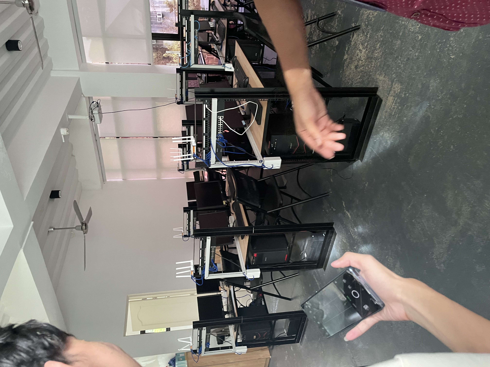
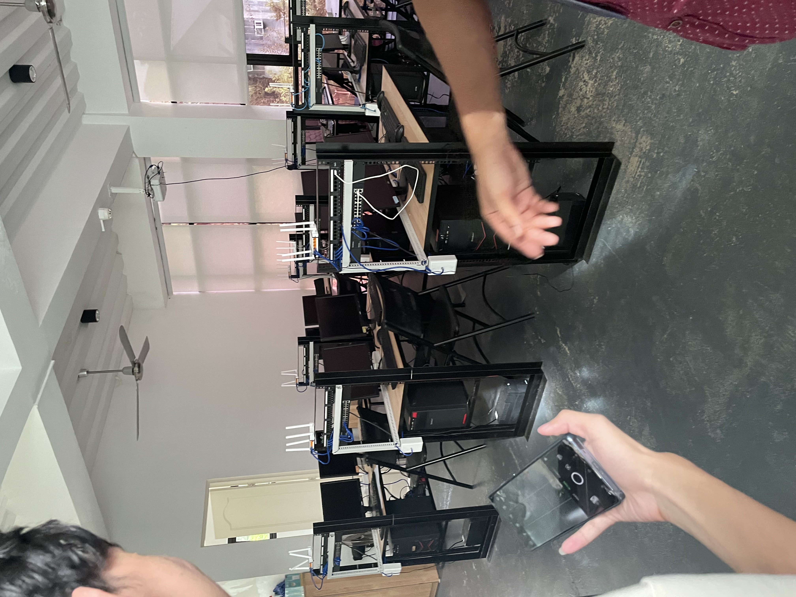
 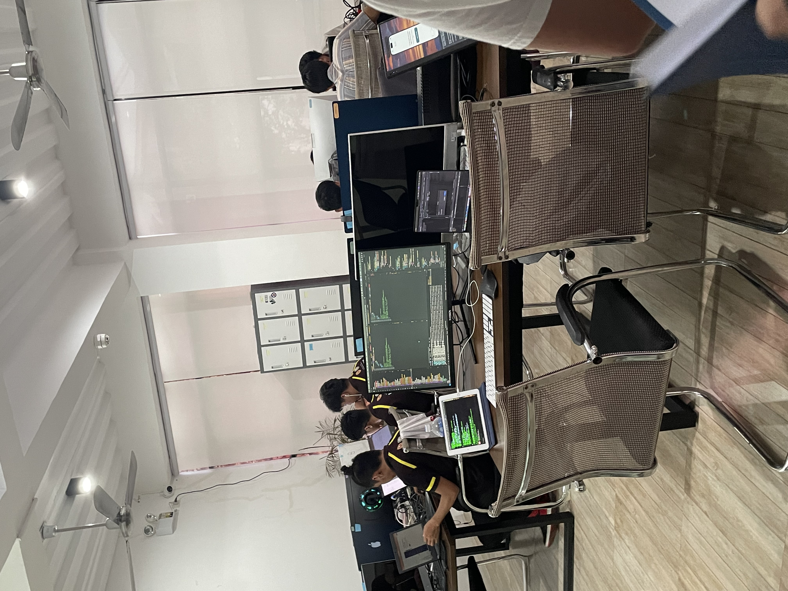
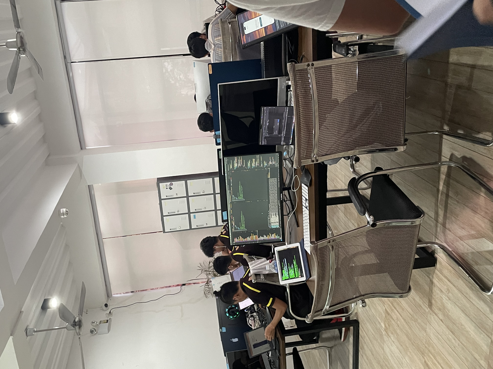

 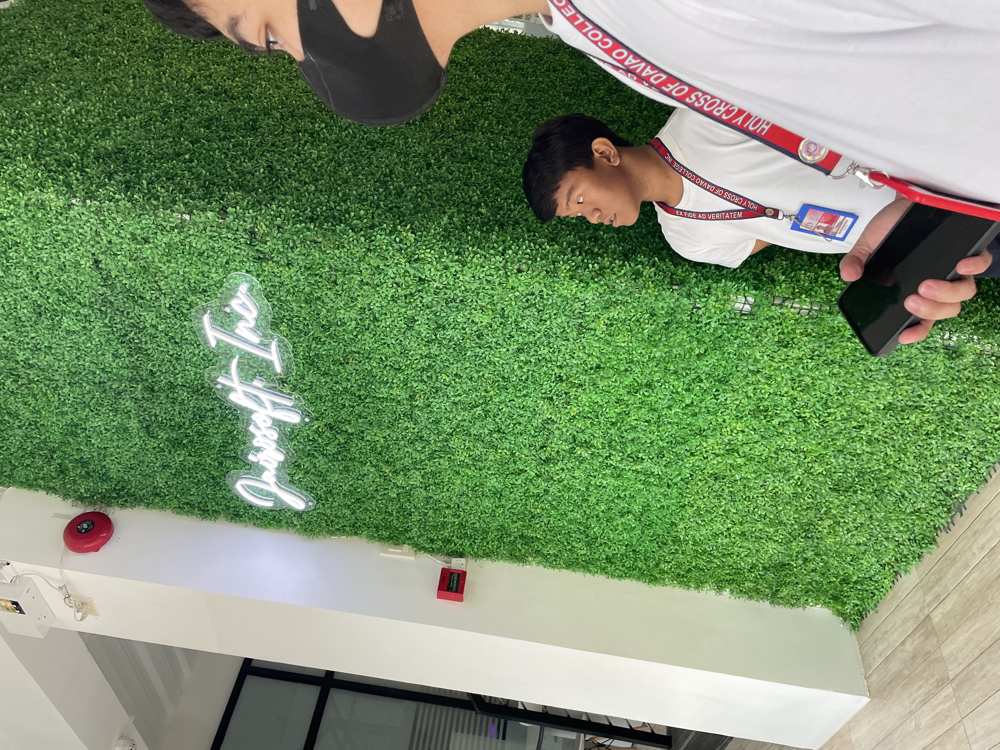
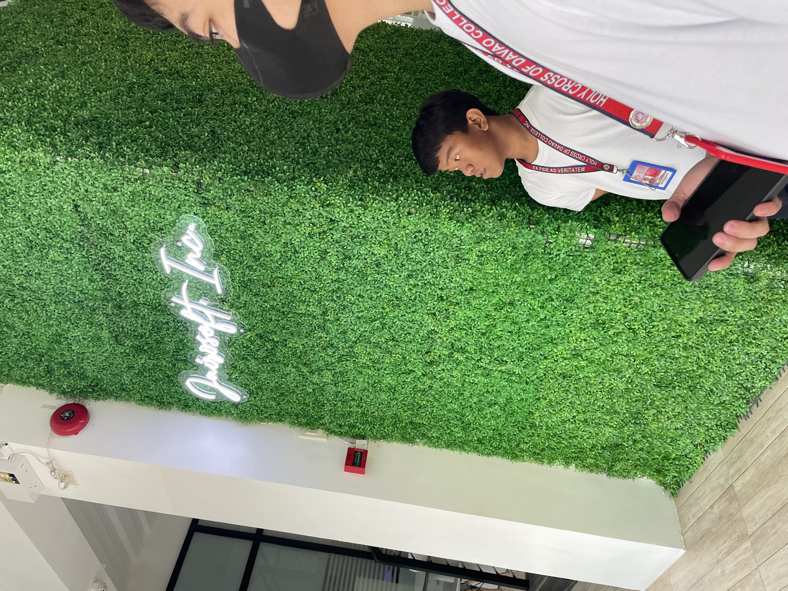
 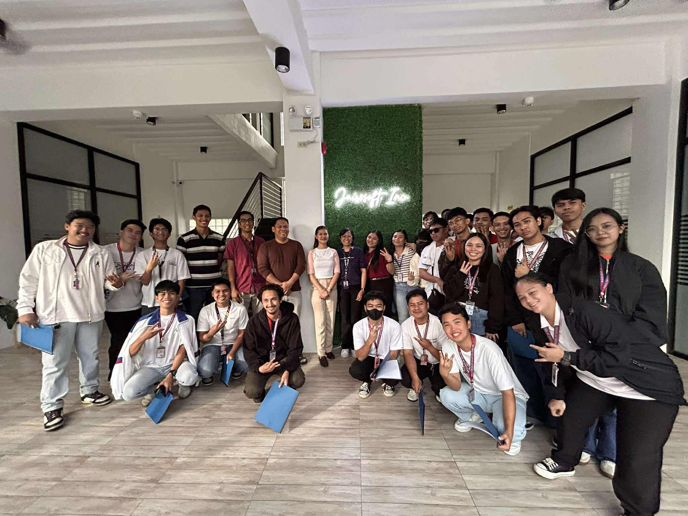
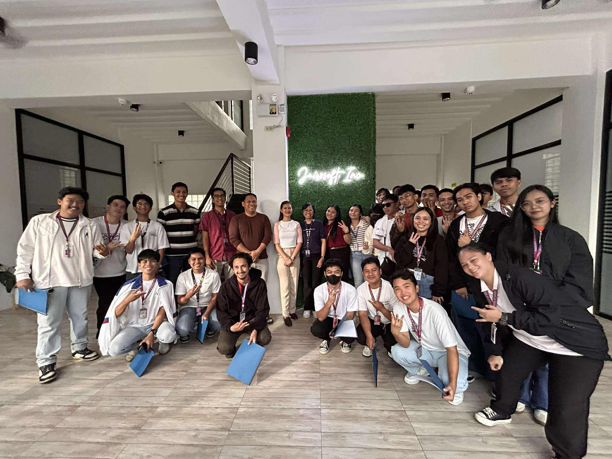
Davao City Central Communications and Emergency Response Center (Central 911)
Observations
At Central 911, I noticed how organized the whole place was. The vehicles, equipment, and different units were all arranged properly, showing how prepared they need to be at all times. The staff guided us well and explained how they respond to emergencies. Their professionalism and readiness were easy to see.
Learnings
The experience taught me that working in an emergency response center requires constant alertness and quick thinking. Everyone needs to stay focused and aware because emergencies can happen anytime. It also made me realize how important it is to stay updated on news and alerts, especially during critical events. The visit showed me the value of teamwork, readiness, and discipline in ensuring public safety.
Reflection
Overall, the visit made me appreciate the people who work in emergency response. Their dedication and preparedness play a huge role in keeping the community safe.

 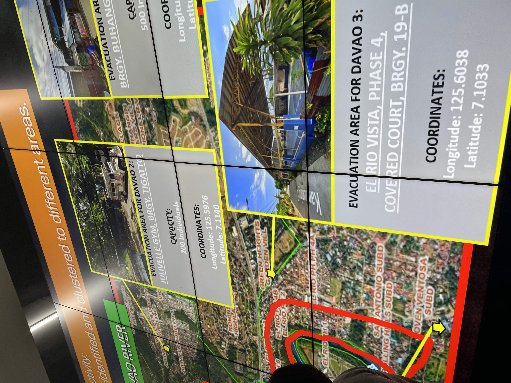
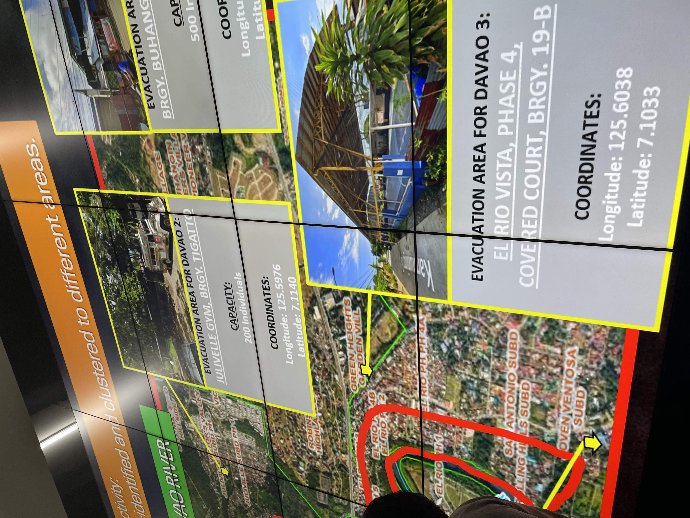


Behind the Scenes
Candid Moments
These are some candid moments captured during our educational tours. From group photos with fellow students to spontaneous interactions with industry professionals, these images showcase the human side of our learning journey. Each photo tells a story of curiosity, discovery, and the bonds formed through shared experiences in the world of technology.
Memories Made
Beyond the formal presentations and guided tours, these moments remind us that learning is also about the connections we make and the memories we create. Whether it's a quick selfie with classmates or a candid shot of someone deeply engaged in a demonstration, these photos capture the genuine excitement and wonder that comes with exploring new technologies and meeting the people who make it all possible.
The Journey Continues
These behind-the-scenes glimpses represent more than just photos - they're evidence of our growth as future IT professionals. Each image marks a step in our educational journey, documenting not just what we learned, but how we felt and who we shared these experiences with along the way.

 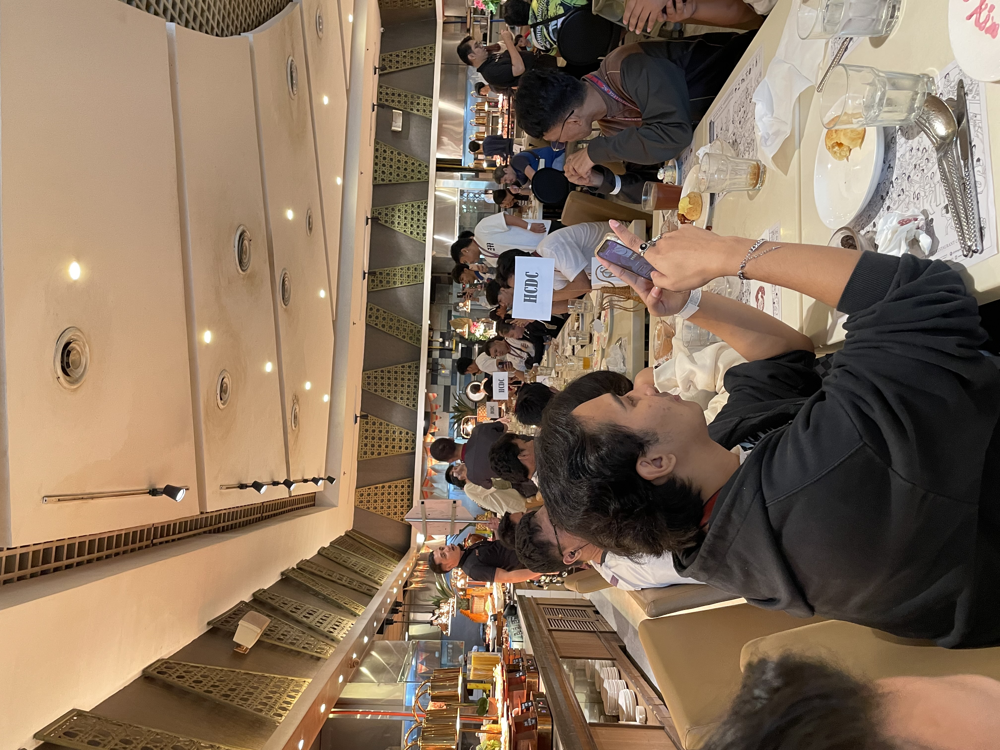
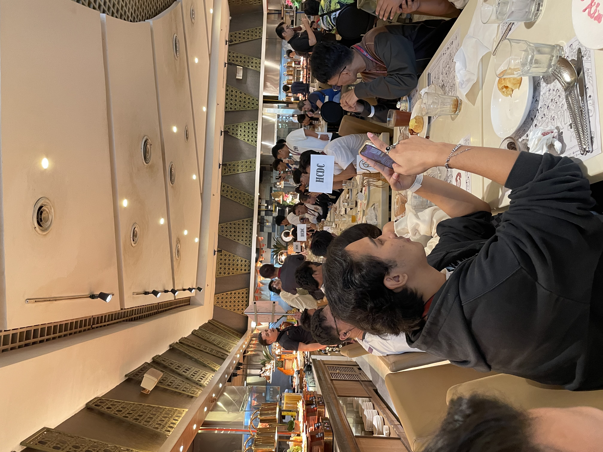
 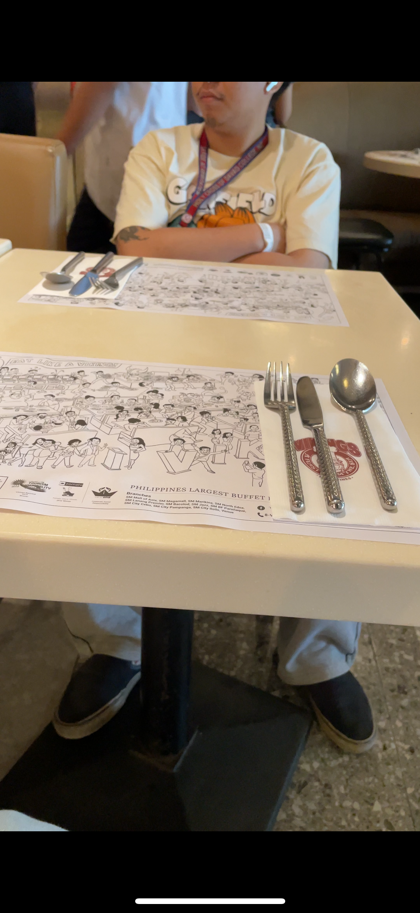
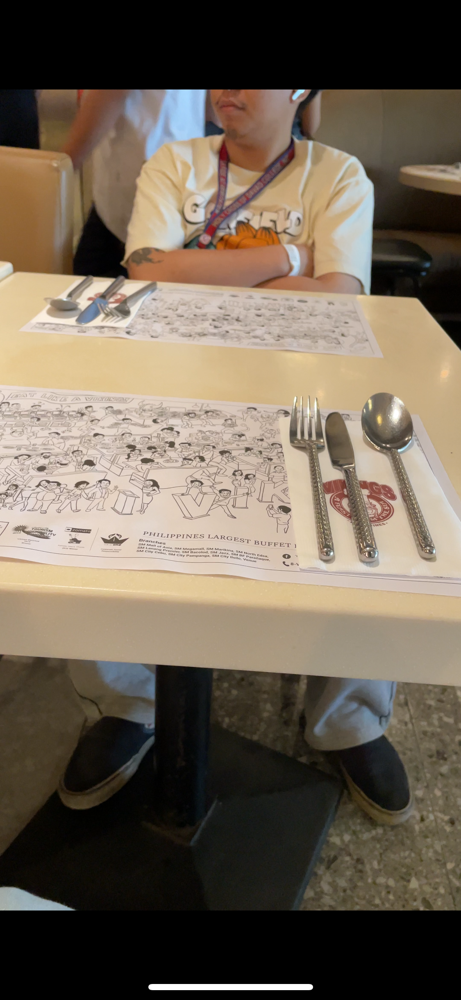